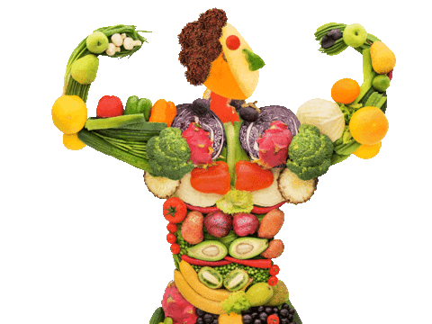

1. Incorporate Various Nutrients
A balanced diet includes carbohydrates, proteins, fats, vitamins, and minerals. Each plays an essential role in maintaining health.
A balanced diet includes carbohydrates, proteins, fats, vitamins, and minerals. Each plays an essential role in maintaining health.

Fruits and vegetables are rich in vitamins, minerals, and fiber. They are vital for reducing the risk of chronic diseases.

Healthy fats, such as those found in olive oil, nuts, and fish, support heart health and brain function.

Water is an essential part of a balanced diet. It helps in digestion, nutrient absorption, and regulation of body temperature.